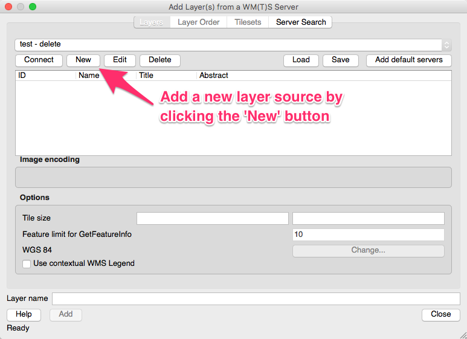
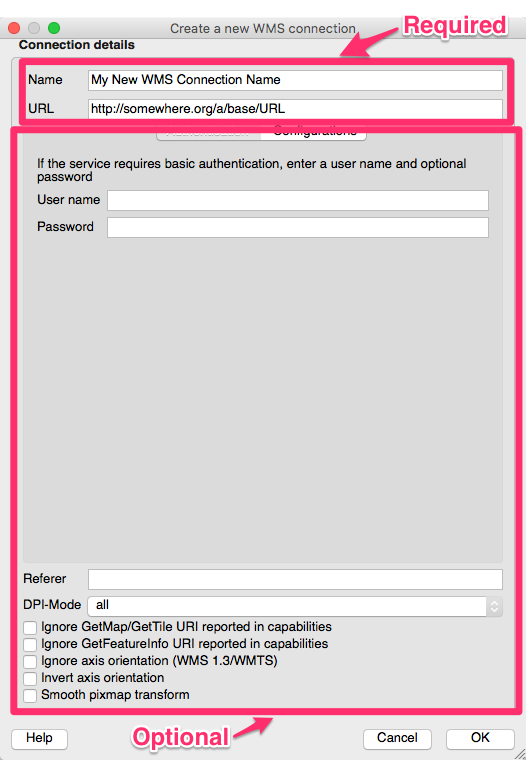
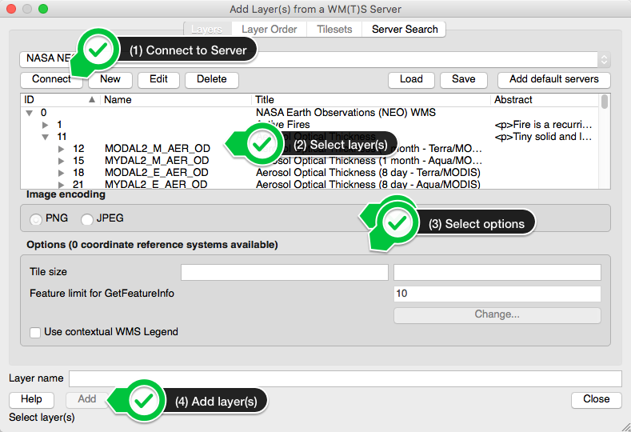

If in doubt, check the information in the metadata
Select the layer type you would like to from “Layer” menu, or click the button in the interface to add a specific layer type.
QGIS - Adding Services and Layers - adding a service
Add a service to the list of services in the menu (if necessary - QGIS retains information about previously added services) by selecting the “New” option under the service list in the “Add Layer(s) from a Server” dialog
“Add Layer(s) from a Server” dialog
QGIS - Adding Services and Layers - adding connection information
Add the name, base URL and any additional information about the service to the connection dialog box
Connection dialog box
QGIS - Adding Services and Layers - connecting to and adding layers from the service
After adding the service, you can select it from the service list in the “Add Layer(s) from a Server” dialog box, connect to the service to retrieve the GetCapabilities response from the service, select the layers and other options advertised by the service through its response, and add them to your map.
“Add Layer(s) from a Server” dialog with service connection and layer selection process
QGIS - Adding Services and Layers - the final added layer
After adding the layer, it appears as an available layer in the table of contents for your map.
Based upon the results of a GetCapabilities request against a remote service. GetCapabilities request information provided as either:
The base URL to which the OGC service parameters would be added
A complete GetCapabilities request against the service
This model applies to ArcGIS just as it did for Quantum GIS - the base URL is provided to the various ArcGIS components that support the addition of OGC services to the client interface.
The addition of OGC WMS and WCS layers to ArcMap is through the same process of
Select the “add data” button
WMS/WCS services are added through the “GIS Servers” option in the “Add Data” dialog
If you have not previously added the service from which you want to add layers, you select “Add WMS Server” or “Add WCS Server” from the list of options in the “Add Data” dialog
You then provide the BASE GetCapabilities URL to the “ADD WMS/WCS Server” dialog that appears
Click “OK”, and the new WMS/WCS service is added to the list of services that is available when you choose to add a WMS service.
You then select the layer(s) from the service that you want to add to your map and click the “add” button in the dialog.
WFS support in ArcGIS 10.0 and beyond requires that the “Data Interoperability Extension” be installed (though it doesn’t have to be enabled)
Connections to WFS services are defined through ArcCatalog’s “Interoperabilty Connections” “Add Interoperability Connection” option
After defining the connection in ArcCatalog (including the specification of the interoperabilty connection type, desired feature types, and maximum number of features to return), its feature types are available through that Interoperability Connection that may be added to ArcMap and other ArcGIS components
Once the connection is created, WFS data may be added through the “Add Data” dialog in ArcMap
ArcGIS WFS Configuration Resources
Steps for connecting to an OGC WFS from within ArcCatalog 10.4
A GetCapabilities request is the key for configuring most OGC client applications to access remote services
The specific way in which the GetCapabilities request is given to the client varies from client to client
Clients can auto/mis-configure themselves based upon the GetCapabilities XML response - when troubleshooting problems with an advertised service, try the manual request approach for the GetCapabilities, data and maps that you have learned about to determine if the service is functioning as advertised.